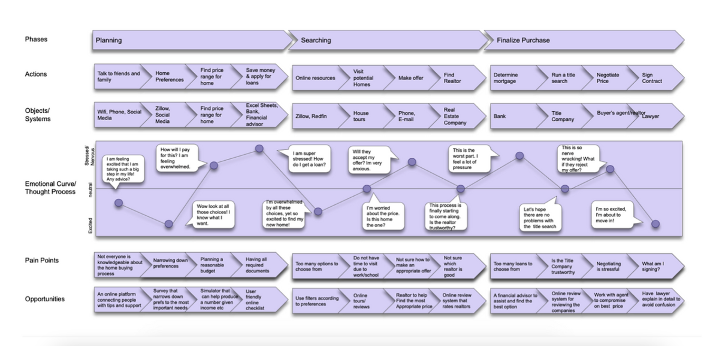
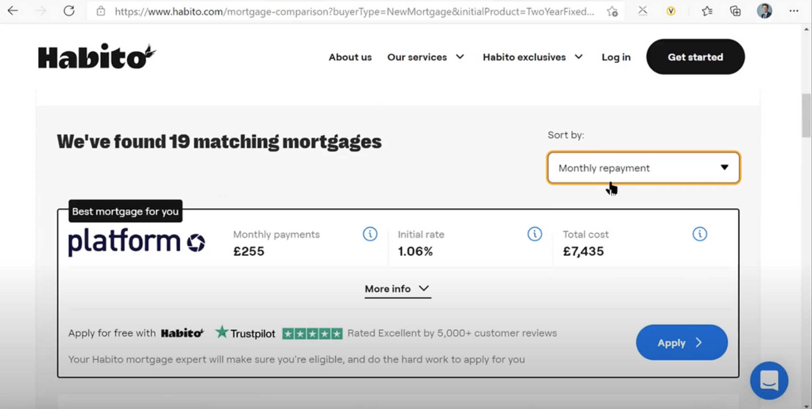

Homies is a home-buying platform that connects you to other home-buyers.
This was created to help the company Blend, with the objective of finding a solution to make first-time homebuyers feel more financially and emotionally prepared to commit to buying a home.
UI Designer
UX Researcher
Prototyping & Testing
March 2021 - May 2021
Blend is a company that offers assistance to its users through every step of the home-buying process. They reached out to our class, User-Centered Research and Evaluation, to ask for help in finding a solution to the problem of home-buyers not committing to purchasing a home
Our group conducted research and discovered that while early home-buyers were not financially prepared, most early home-buyers found it more difficult to feel emotionally prepared to commit to home-buying. First-time home-buyers need that emotional assurance in order to be ready to not only be financially prepared but also ready to commit to buying a home. With this, the problem can be reframed by asking: How can we encourage first-time homebuyers to commit to purchasing a home by improving their emotional preparedness?
For our research, we used both generative and evaluative research methods with over fifteen unique participants. Through our research, we gained an understanding of the biggest obstacles first-time homebuyers face and focused on crafting a solution that would better prepare potential buyers to overcome these obstacles.
First, I created a stakeholder and customer journey to better understand the home-buying process as well as identify any pain points and opportunities along the home-buying journey.
As a team, we all performed background research on who first-time homebuyers are as well are their general demographics to help us better understand whom we are designing for.
We employed think-aloud protocols to help us understand how first-time home buyers might use a website or service with features we identify as important to the users. Specifically, we used the UK mortgage platform Habito, to help identify the areas our first-time home buyers felt the least confident in as well as areas that contributed to first-time home buyers not being committal to buying a home.
We performed contextual inquiries with the aim of betting understanding how people engage themselves in finding the right home and how prepared there are as well as any factors that might influence these aspects. After the contextual inquires our team came together to affinity diagram. The affinity diagram revealed insights and patterns through the groupings that were made. We found that there was a clear connection between level of commitment and methodology for finding homes. Additionally, the more emotionally prepared the buyer felt, the more home-buying knowledge they had.

Once we identified the user needs we thought were most vital to our project, we developed storyboards. The storyboards encouraged the team to think broadly about potential solutions to the specific needs we found. Each storyboard contained a safe idea, a risky idea and a very risky idea.

Using the storyboards, we speed dated them with participants to validate these needs exist and to see which ideas had the strongest positive reactions. Most interviewees validated the need for emotional assurance throughout the home-buying process. They spoke about the emotional burden one would expect in the home-buying process and that they would strictly prefer receiving emotional assurance from people they are familiar with over strangers or CUIs.
FLEXIBILITYHaving flexibility in options and preferences in a platform is important for a home-buyer. Being able to customize their preferences allows users to feel more confident and trustworthy using the platform. |
"Being able to put in my preferences helps me pick the most suitable candidante that I think might be able to help me best during my home-buying process." |
|
"Knowing someone you've talked to that's in the neighborhood you've moved to is nice, almost like a bumble for pre-moving somewhere." |
FAMILIARITYPeople want emotional assurance throughout the home buying process. People prefer getting emotional support from people they know, can be close with and are there for the right reasons. |
TRUSTMost people are hesitant about putting their trust in those involved in the home buying process, especially depending on professionalism and familiarity. They want security measures to ensure a certain level of trust. |
"I am glad I can chat with my matches beforehand as well as read reviews on them to help gain trust and see if they can help me during my home-buying journey." |
Homies focuses on improving potential home buyers' emotional readiness for committing to homeownership. Homies connect hesitant and inexperienced potential home buyers with new homeowners in the area they intend to live in. Potential home buyers have the opportunity to match with homeowners who have recently gone through the home buying journey based on the user's preferences. Homies create a community of support where hesitant first-time homebuyers can become more confident and committed to homeownership as well as more emotionally prepared and dedicated to the process.